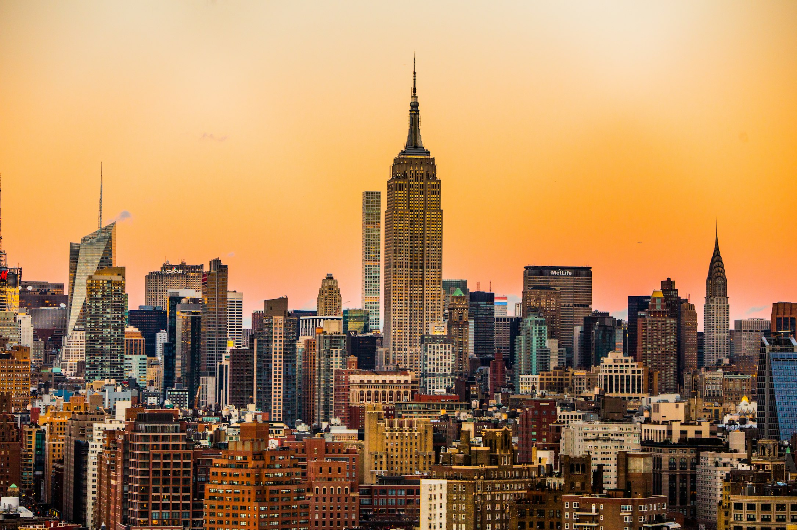

🌟 Introduction
From the glittering skyline of New York City to the tech-driven hubs of Silicon Valley, the United States of America has always symbolised ambition, innovation, and limitless possibilities. For generations, people from all over the world have looked towards the USA to build a better life, gain world-class education, or simply experience the iconic culture they’ve grown up seeing in films and media. But what does it really mean to explore the United States of America for Bangladeshicitizens today?
You might be a student dreaming of an Ivy League degree, an ambitious professional seeking global exposure, or an avid traveller wanting to road-trip across Route 66. Whatever your aspiration, the USA is increasingly popular among Bangladeshis because it truly offers a pathway for everyone. The community of Bangladeshis in the US is thriving, creating a welcoming bridge for newcomers.
In this comprehensive guide, we will walk you through everything you need to know about the United States, from its rich history and powerhouse economy to the practical steps of how you can visit, study, or immigrate there from Bangladesh. Let’s dive into what makes this country a premier destination for your global journey.

🗺️ Country Overview
The United States of America is a vast, diverse nation comprised of 50 states and a federal district. With its capital situated in Washington, D.C., the country spans across North America, bordered by Canada to the north and Mexico to the south. Because of its sheer size—ranking as the third-largest country globally by total area—the USA features incredibly varied geography, ranging from the sunny beaches of California and Florida to the snow-capped peaks of the Rocky Mountains and the expansive plains of the Midwest.
While English is the de facto national language and the primary medium of communication, the USA is a melting pot of cultures. You will hear languages from all over the world, including Bengali, spoken in vibrant neighbourhoods in cities like New York, Dallas, and Detroit. The official currency is the US Dollar (USD), the backbone of the global economy.
Given its massive landmass, the United States spans multiple time zones and experiences a multitude of climates. If you prefer a tropical, warm environment reminiscent of Bangladesh, the southern states might appeal to you. If you enjoy distinct, crisp seasons with snowy winters, the Northeast or Midwest will be a delightful change of pace.
The national flag, affectionately known as the Stars and Stripes, represents the original 13 colonies and the current 50 states, symbolising unity and freedom. The cultural identity of the USA is heavily rooted in individualism, freedom of expression, and the "American Dream"—the belief that anyone, regardless of where they were born, can achieve their own version of success through hard work. Respect for diverse religions and cultural backgrounds is a cornerstone of American society, which provides a comforting environment for Bangladeshis holding onto their rich heritage while embracing new horizons.

📜 History of the United States of America
The story of the United States of America is one of dramatic change, resilience, and unyielding progress. Long before European settlers arrived, the land was inhabited by diverse Indigenous civilisations, each with their own rich cultures, languages, and deep connections to the land. The turning point in global history occurred in the late 15th and 16th centuries when European powers, primarily the British, Spanish, and French, began colonising the continent.
By the 1700s, thirteen British colonies had established themselves along the eastern coast. High taxes, lack of representation, and a growing desire for self-governance culminated in the American Revolutionary War. On July 4, 1776, the colonies adopted the Declaration of Independence, officially severing ties with Great Britain and birthing a new nation built on democratic ideals.
The 19th century was marked by immense territorial expansion—often referred to as 'Manifest Destiny' —which saw the country stretch from the Atlantic to the Pacific Ocean. This period of growth was unfortunately also scarred by the forced displacement of Native Americans and the deeply tragic institution of slavery, leading to the American Civil War (1861–1865). The victory of the Union forces led to the abolition of slavery and set the stage for rapid industrialisation.
In the 20th century, the United States emerged as a global superpower following its crucial roles in World War I and World War II. The post-war era ushered in a booming economy, the Civil Rights Movement which championed equality for all races, and a technological revolution that continues to this day.
For South Asians and Bangladeshis, the relationship with the US significantly evolved after the landmark Immigration and Nationality Act of 1965, which abolished national-origin quotas. This opened the doors for skilled workers, students, and families from Bangladesh to settle in the US, forging a strong diaspora that contributes immensely to both nations today.

📊 Economy & Economic Growth
The United States of America boasts the largest economy in the world by nominal GDP, accounting for roughly a quarter of the global economy. With a highly diversified and technologically advanced economic structure, the US GDP stands at over $25 trillion, providing an exceptionally high standard of living and a high GDP per capita.
Several major industries drive this colossal economic engine. The technology sector, anchored by giants in Silicon Valley, leads global innovation. Furthermore, the US is a powerhouse in healthcare, finance (centred around Wall Street), advanced manufacturing, and agriculture. Over the last decade, despite global fluctuations, the U.S. economy has shown remarkable resilience, characterised by steady growth, dynamic entrepreneurship, and a fiercely competitive job market.
For professionals looking to immigrate to the United States of America from Bangladesh, the employment market is incredibly promising. There is an ongoing, massive demand for skilled workers in IT, healthcare (especially nursing and medicine), engineering, business analytics, and even in unskilled labour sectors. Because of this high demand, opportunities like the United States of America work permit for Bangladeshiprofessionals can be highly rewarding, offering competitive salaries that far exceed global averages.
The cost of living varies significantly depending on the state and city. Metropolises like New York and San Francisco are notoriously expensive, but many incredibly prosperous cities in Texas, the Midwest, and the South offer a highly affordable lifestyle. Compared to Bangladesh, the cost of living is notably higher, but the earning potential is proportionally much larger, allowing families to save, remit money back home, and enjoy a premium lifestyle.
Finally, the strength of the US Dollar (USD) means that earning in America provides immense financial leverage when converted to Bangladeshi Taka (BDT), making it an attractive prospect for ambitious workers looking to secure cross-generational wealth.
🏛️ Political Status & Government
The US operates as a federal democratic republic, meaning power is shared between the national (federal) government and the individual state governments. The federal government is divided into three distinct branches: the Executive (led by the President), the Legislative (Congress), and the Judicial (Supreme Court). This system of checks and balances is designed to prevent any single entity from gaining absolute power.
Political stability is a hallmark of the United States. Despite passionate political debates and a vocal two-party system (Democrats and Republicans), the democratic institutions are robust, and the transfer of power is dictated strictly by the US Constitution. For foreigners, the United States is a nation of laws; safety, legal rights, and due process are fiercely protected, providing a secure environment for immigrants and international students.
Internationally, the United States holds pivotal roles in global organisations like the UN, NATO, and the World Bank. The diplomatic relationship between the US and Bangladesh is strong and multi-faceted, heavily focused on trade, counterterrorism, and climate change initiatives. As a result, navigating the visa and immigration policies, while rigorous, follows a well-defined legal process with clear guidelines for student visas, tourist permits, and employment-based green cards.
👨👩👧👦 Population & Demographics
With a population surpassing 330 million, the United States is the third most populous country in the world. It is famously a "nation of immigrants," making it one of the most ethnically and culturally diverse countries on the globe. While the majority of the population is of European descent, there are massive communities of Hispanic, African American, and Asian descent.
The Bangladeshi diaspora in the United States is an integral part of this diverse tapestry. While exact figures vary, there are well over 200, 000 Bangladeshis living in the US, predominantly clustered in metropolitan areas like New York, New Jersey, Texas, Michigan, and California. This established community means new arrivals will find a sense of home, with access to authentic groceries, restaurants, and cultural networks.
English is predominantly spoken everywhere, though Spanish is highly prevalent in the southern and western states. The US has no official religion, upholding the freedom to practice any faith. You will find thousands of mosques, Islamic centres, and community halls spread across the country, ensuring that Bangladeshi Muslims have robust, supportive environments for religious and cultural practices. With over 82% of the population living in vibrant urban and suburban areas, the infrastructure supports a modern and fast-paced lifestyle.
🎓 Education System
If you intend to study in the United States of America from Bangladesh, you are targeting the absolute pinnacle of global education. The US higher education system is universally recognised for its unparalleled quality, monumental research budgets, and flexibility. The academic environment focuses not merely on exams, but on critical thinking, practical application, and holistic development.
The US hosts a disproportionately high number of the world’s leading higher education institutions. Elite universities like Harvard, MIT, Stanford, and Caltech consistently dominate QS and THE global rankings. However, excellence isn't limited to the Ivy League; hundreds of robust state universities and private colleges offer phenomenal education across every conceivable discipline, from STEM (Science, Technology, Engineering, Mathematics) to the liberal arts and humanities.
For Bangladeshi students, the medium of instruction is English. The US academic calendar operates primarily on a semester system—typically a Fall semester starting in August/September and a Spring semester starting in January. This allows significant flexibility in course selection and declaring a major. Many universities actively cultivate global diversity, making them incredibly welcoming to international students. Consequently, degrees obtained in the US are highly prestigious and instantly recognised by employers worldwide, drastically boosting a graduate's career trajectory and earning potential.
One primary concern for students is funding, but rest assured, the financial support ecosystem is vast. To get a the United States of America scholarship for Bangladeshi students, one can explore university-specific merit scholarships, teaching assistantships (TA), graduate research assistantships (RA), and government-backed fellowships. These funding opportunities can drastically reduce or completely cover tuition costs, while providing a stipend for living expenses.
✈️ Tourism & Travel
To visit the United States of America from Bangladeshis to embark on a journey of a lifetime. The sheer scale of the country means it offers every conceivable type of holiday. You can marvel at the neon lights of Times Square in New York City, hike the breathtaking trails of the Grand Canyon, experience the magic of Disney World in Orlando, or drive along the stunning Pacific Coast Highway in California.
Because of its size, the best time to visit depends entirely on your destination. Summer (June to August) is popular for national parks and beaches, while Autumn offers spectacular foliage in New England. If you love winter sports, the slopes of Colorado are pristine between December and February.
Food in the US is as diverse as its population. You can find everything from authentic deep-dish pizza in Chicago to incredible Tex-Mex in the south. For Bangladeshi Muslim travellers, finding Halal food is increasingly easy, particularly in major cities with sizable South Asian and Middle Eastern populations like New York, Dallas, and Los Angeles. There are numerous apps and directories dedicated to locating top-tier Halal dining.
Transportation mostly relies on domestic flights for long distances and renting a car for local exploration, as the US is built for driving. The country is generally very safe for tourists, provided standard urban safety precautions are taken. A typical travel budget can range significantly depending on the city, but anticipating robust expenses for flights from Dhaka and mid-range accommodations will ensure a comfortable, stress-free vacation. Want a unique experience? Catch a bustling NBA game or visit a genuine NASA Space Center—experiences uniquely tied to American culture.
🇧🇩 Why Bangladeshi People Should Visit the USA
If you are contemplating an international trip, securing a the United States of America tourist visa from Bangladeshopens the door to an unmatched global experience. Why should you visit? First, the USA offers a perfect blend of high-energy urban exploration and awe-inspiring natural beauty. It is the ultimate playground for tourists, whether you want to shop in premium outlets or explore natural wonders that you simply cannot find in South Asia.
For Bangladeshis, the strong presence of the diaspora means you can easily experience the modern Western world without feeling completely isolated from your roots. Need a comforting plate of biryani or a cup of deshi tea after a long day of sightseeing in New York? The vibrant communities in places like Jackson Heights (New York) or Devon Avenue (Chicago) have you warmly covered.
Furthermore, the US is exceptionally friendly toward South Asian visitors. Hospitality is a core American trait; you will find locals genuinely curious and welcoming. A tourist visa also provides the brilliant opportunity to personally tour university campuses if you are planning future studies, or scout cities if you have long-term immigration aspirations. It is a high-value journey that expands your worldview, enriches your cultural understanding, and creates memories that will last a lifetime.
🎓 Why Bangladeshis Should Study in the USA
Choosing to study in the United States of America from Bangladeshis an investment that yields incredible returns. When you compare the quality of education with global competitors like the UK, Canada, or Australia, the USA consistently dominates in terms of research funding, faculty prestige, and campus facilities. An American degree signals to global employers that you possess critical thinking skills and adaptability.
While tuition fees can appear high—ranging widely from $15, 000 to over $50, 000 per year (approximately 16.5 Lakh to 55 Lakh BDT)—the extensive availability of financial aid, assistantships, and the specific the United States of America scholarship for Bangladeshi studentssignificantly offsets these Country Overview costs. Moreover, international students with a the United States of America student visa for Bangladesh(the F-1 visa) are legally permitted to work part-time (up to 20 hours per week) on campus, which helps massively in covering living expenses like accommodation and groceries.
Academically, to secure admission, most universities will require English proficiency tests such as IELTS (averaging a band score requirement of 6.0 to 7.0) or TOEFL. Depending on the level of study, standardised tests like the SAT, GRE, or GMAT may also be necessary. Popular disciplines among Bangladeshi students include Computer Science, Engineering, Business Administration, Data Science, and Public Health, aligning well with the rapid digitization in Bangladesh.
Perhaps the most compelling reason to study in the US is the Post-Completion Optional Practical Training (OPT). This allows graduates to work in the US in their field of study for 12 months, which can be extended by an additional 24 months for STEM degrees. This work experience is invaluable, often serving as a stepping block towards an employment-based visa (H-1B) and, eventually, a path to permanent residency.

🌍 Why Bangladeshis Should Consider Immigrating to the USA
If securing a stable, prosperous, and high-quality life is your ultimate goal, then looking to immigrate to the United States of America from Bangladeshis a profoundly smart move. The US consistently ranks highly on global quality of life indices. It offers cutting-edge healthcare, a heavily emphasised work-life balance in modern corporate sectors, and unparalleled consumer conveniences.
From an immigration standpoint, the USA provides multiple concrete pathways to becoming a Lawful Permanent Resident (getting a Green Card) and eventually achieving full citizenship. The job market is remarkably dynamic, placing a massive premium on talent, hard work, and innovation. Bangladeshi professionals—especially in tech, medicine, academia, and engineering—are in high demand. The average salary in the US dwarfs what can be earned in South Asia, allowing immigrants to achieve financial independence, build substantial generational wealth, and easily support families back home.
For those who may not have advanced degrees or specialised skills, pathways like the United States of America PR (Specially EB3 Unskilled) for Bangladeshicitizens provide an exceptional opportunity. This program grants a direct Green Card through sponsored, certified employment, allowing whole families—including spouses and children under 21—to immigrate simultaneously. This means your children will have access to free public schooling and identical university opportunities as American citizens.
Cultural integration is also a massive benefit. The Bangladeshi community in the States is deeply woven into the local fabric. Through community associations, cultural festivals, and religious institutions, immigrant families successfully maintain their heritage while embracing the tremendous benefits of American social welfare formats, excellent infrastructure, and personal liberties.

📋 How to Visit the USA from Bangladesh
Planning to travel? Securing a the United States of America tourist visa from Bangladesh(specifically the B-1/B-2 visitor visa) is a straightforward, albeit rigorous, process. Here is your step-by-step guide to navigating it smoothly:
- Step 1: Complete the DS-160 Form.This is the online non-immigrant visa application. You must fill it out accurately detailing your travel plans, background, and employment.
- Step 2: Pay the Visa Fee.The current fee for a tourist visa is typically $185 (around 20, 500 BDT, subject to exchange rates). This is paid at designated banks in Bangladesh.
- Step 3: Schedule Your Interview.Book an appointment at the US Embassy in Dhaka. Wait times can vary, so plan months in advance of your intended travel date.
- Step 4: Prepare Your Documents.You will need a valid passport (with at least six months validity), a recent photograph meeting strict US criteria, your DS-160 confirmation page, and strong supporting documents. These include robust bank statements, property documents, and employment letters showing your financial capability and strong ties to Bangladesh, proving you will return after your visit.
- Step 5: Attend the Interview.The consular officer will ask you about the purpose of your trip and your ties to your home country. Answer honestly, confidently, and concisely.
Visas are often granted with a 5-year multiple entry validity, allowing you to stay for up to 6 months per visit. Common reasons for rejection include weak financial evidence or failure to demonstrate strong ties to Bangladesh. Having a clear itinerary and solid proof of employment back home ensures a smooth approval.

📚 How to Apply to Study in the USA from Bangladesh
Securing a the United States of America student visa for Bangladeshrequires careful planning and a strategic timeline. We recommend starting the process 10 to 12 months before your intended intake.
- Step 1: Shortlist Universities.Research universities that align with your academic background, budget, and career goals. Look closely at their curriculum and scholarship opportunities.
- Step 2: Check Eligibility and Take Tests.Ensure you meet the academic requirements. You will likely need to sit for the IELTS (target 6.5+ for competitive universities) or TOEFL, and potentially the SAT, GRE, or GMAT.
- Step 3: Prepare the Application Package.Gather your academic transcripts, degree certificates, a compelling Statement of Purpose (SOP), Letters of Recommendation (LORs) from professors or employers, and an updated CV.
- Step 4: Apply.Submit your applications directly through the university portals or via a trusted consultant like Edu Abroad Limited to avoid complex paperwork errors.
- Step 5: Receive the I-20 Form.Once accepted, you must show proof of funds (bank statements) capable of covering your first year of tuition and living costs. The university will then issue an I-20 form.
- Step 6: Apply for the F-1 Visa.Fill out the DS-160, pay the SEVIS fee (around $350) and the visa application fee ($185), and schedule your embassy interview.
During your visa interview, you must clearly articulate why you chose the particular university and how the degree will benefit your career upon returning to Bangladesh.

🏠 How to Immigrate to the USA from Bangladesh
The journey to immigrate to the United States of America from Bangladeshrelies largely on family sponsorship, employment, or significant investment. Here are the most prominent pathways:
- Student to Professional Pathway:Many Bangladeshis start with an F-1 student visa, gain employment through OPT, and have their employer sponsor a dual-intent H-1B visa. Eventually, the employer sponsors an Employment-Based (EB) Green Card.
- Skilled Worker Visas:Highly skilled professionals can be sponsored directly from Bangladesh via EB-1, EB-2, or EB-3 skilled categories. This requires a US employer to file a petition and labor certification proving no American worker was available for the job.
- EB-3 Unskilled Program:The United States of America PR (Specially EB3 Unskilled) for Bangladeshicitizens is a massive opportunity. Because no degree or prior experience is required, a trusted employer sponsors you for entry-level positions. Processing times typically take 2-4 years, but it grants a direct Green Card upon entry for you and your family.
- Family Sponsorship:If you have immediate relatives (spouse, parents, siblings, or adult children) who are US citizens or permanent residents, they can file a family-based petition for you.
Successful immigrants often advise patience and strict adherence to documentation. Working with highly experienced consultants ensures that your petitions are filed seamlessly, avoiding costly delays or denials.

💬 How Edu Abroad Limited Can Help You
Navigating the complexities of university admissions, scholarship hunting, and immigration law can feel overwhelming. At Edu Abroad Limited, we transform this stressful process into a seamless, confident journey. Whether you are aiming to visit, study, or immigrate, our expert consultants provide personalised guidance tailored to your specific background.
From shortlisting top-tier universities and crafting the perfect Statement of Purpose, to rigorous visa interview preparation and handling the United States of America PR (Specially EB3 Unskilled) for Bangladeshiapplications, we stand by your side every step of the way.
Your American Dream is achievable, and you don’t have to do it alone. We encourage you to reach out, book a free consultationtoday, and let’s start mapping out your future together.
Edu Abroad Limited | Do not distribute without permission.
❓ Frequently Asked Questions (FAQ)
Q: Is the United States of America safe for Bangladeshi people?
Yes, it is generally very safe. Like any major country, safety depends on the location and common sense. University campuses and suburban areas are highly secure. Furthermore, the US has stringent laws protecting the civil liberties and rights of all individuals, including foreigners.
Q: What is the cost of studying in the United States of America for Bangladeshi students?
Tuition fees typically range from $15, 000 to over $50, 000 annually. However, living costs and tuition can be significantly mitigated through a the United States of America scholarship for Bangladeshi studentsand by working part-time on campus.
Q: Can I work while studying in the United States of America?
Yes ! International students on an F-1 visa are permitted to work up to 20 hours per week on-campus during the semester, and up to 40 hours during official university breaks and holidays.
Q: Is there a Bangladeshi community in the United States of America?
Absolutely. The US hosts a thriving Bangladeshi diaspora of over 200, 000 people, with massive, actively supportive communities in cities like New York, Los Angeles, Detroit, and Houston.
Q: What is the easiest visa to get for the United States of America from Bangladesh?
The "easiest" depends on your qualifications. A the United States of America student visa for Bangladesh(F-1) is highly achievable if you have university acceptance and financial backing. For immigration, the EB-3 Unskilled visa is highly accessible as it requires no prior degree or experience.
Q: What IELTS score do I need to study in the United States of America?
Generally, US universities require an overall IELTS band score between 6.0 and 7.0 for undergraduate and graduate programs. High-ranking institutions typically prefer a minimum of 6.5 or 7.0.
Q: How long does it take to get a PR in the United States of America?
Timelines vary massively based on the pathway. The EB-3 Unskilled route currently takes around 2 to 4 years to process, but grants immediate PR upon landing in the US.
Q: Is the food Halal-friendly in the United States of America?
Yes. With a vast and growing Muslim population, finding certified Halal restaurants, grocery stores, and meat delivery services is extremely convenient, particularly in all major metropolitan areas and near large university campuses.